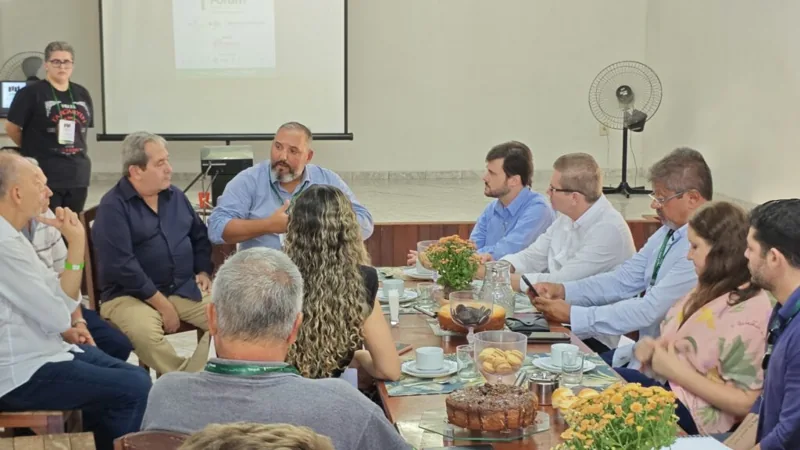
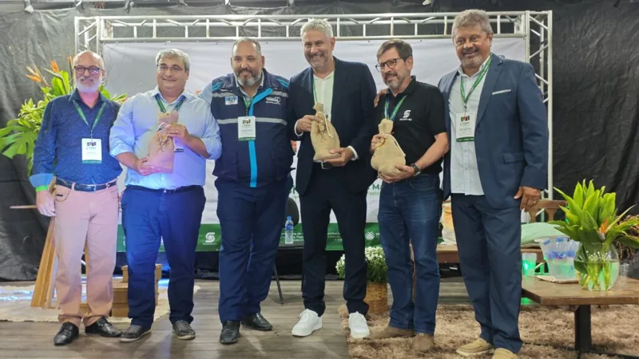
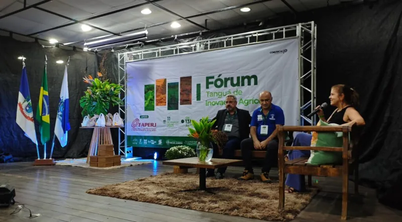
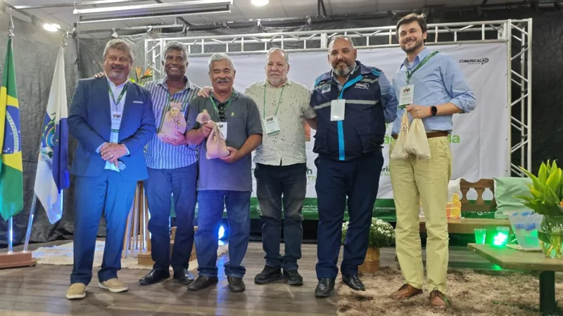
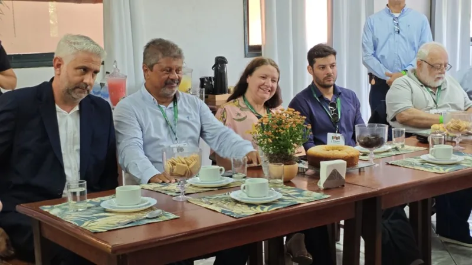
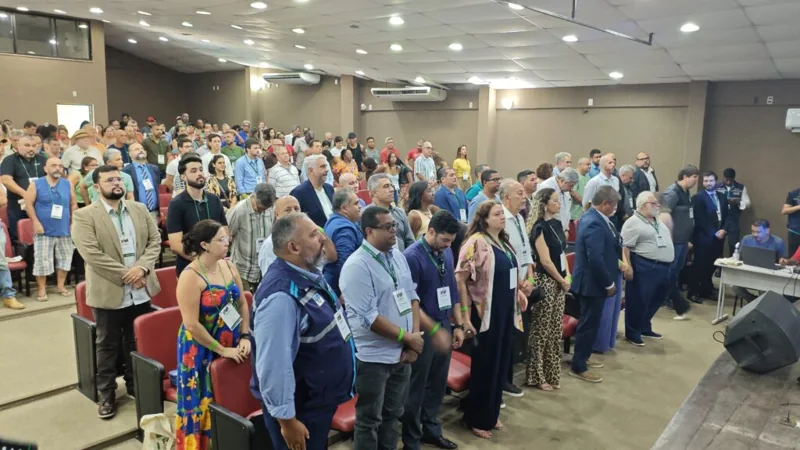
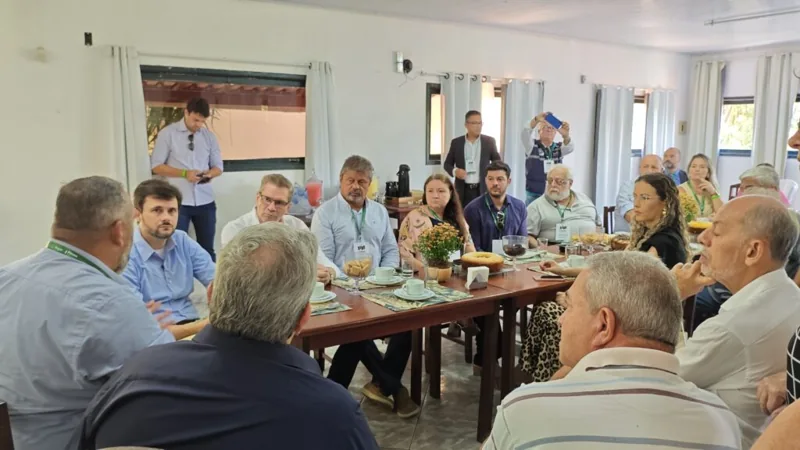
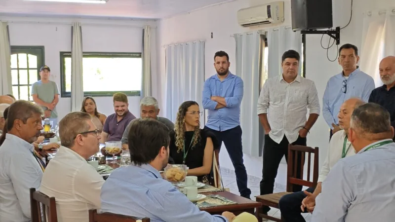
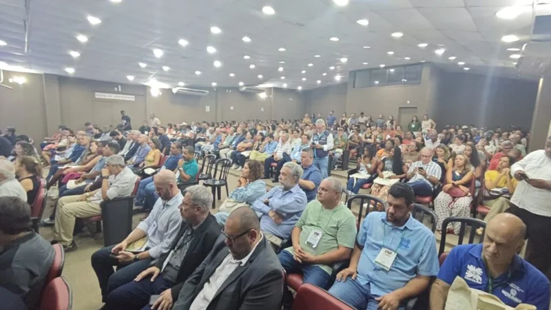

1º Fórum de Tanguá de Inovação Agrícola: Inovação e Sustentabilidade Impulsionam o Futuro do Campo

Na última terça-feira (11/03), Tanguá se tornou palco de um marco para o setor agrícola regional: o 1º Fórum de Tanguá de Inovação Agrícola, promovido pela FAPERJ em parceria com a Secretaria Municipal de Ciência, Tecnologia, Inovação, Trabalho e Renda. O evento reuniu especialistas, pesquisadores, produtores rurais e autoridades em um debate essencial sobre como a tecnologia pode transformar a agricultura local, aliando produtividade e sustentabilidade.
Abertura com Lideranças e Objetivos Estratégicos
A cerimônia de abertura contou com a presença de figuras-chave como o Prefeito Rodrigo Medeiros, o Professor Paulo Renato Faria (Secretário Municipal de Ciência, Tecnologia, Inovação, Trabalho e Renda e Presidente da FAG), e o Secretário de Ciência e Tecnologia para o Desenvolvimento Social do Ministério da Ciência, Tecnologia e Inovação do Brasil, Inácio Arruda. Em discursos inspiradores, eles destacaram a necessidade de unir políticas públicas, pesquisa e capacitação para modernizar o campo, garantindo desenvolvimento econômico sem descuidar do meio ambiente.
Antes do início das discussões, uma reunião estratégica entre autoridades definiu prioridades para o setor, como a implementação de tecnologias emergentes (como agricultura de precisão e IoT) e programas de formação para produtores. O consenso foi claro: investir em inovação é o caminho para posicionar Tanguá como referência em agricultura sustentável.
Parcerias que fortalecem o Agro Local
O sucesso do fórum foi ampliado pelo apoio de instituições renomadas, como Emater-RIO, UENF, IFF, Pesagro-RIO, Secretaria de Estado de Agricultura e o Sindicato Rural de Itaboraí, entre outras. Essa rede de colaboração reforça o compromisso coletivo em transformar desafios em oportunidades, integrando conhecimento acadêmico, políticas públicas e a força do produtor rural.
Um Legado para o Futuro
O evento não apenas debateu ideias, mas plantou sementes para ações concretas. Ao destacar casos de sucesso e ferramentas tecnológicas acessíveis, o fórum mostrou que a inovação no campo é viável e urgente. Para Tanguá, o momento é de unir tradição agrícola às soluções do século XXI, garantindo que o município colha os frutos de um crescimento inteligente e inclusivo.
Confira as fotos do evento e acompanhe as próximas etapas desta iniciativa que promete revolucionar o agro na região! 🌱💡
InovaçãoNoCampo #AgriculturaSustentável #TanguáEmAção
Registros do acontecimento








